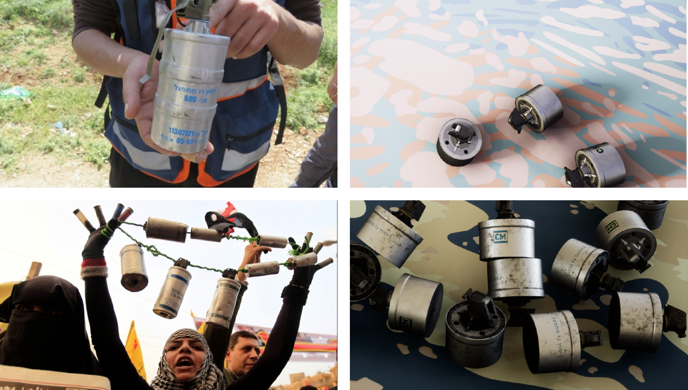
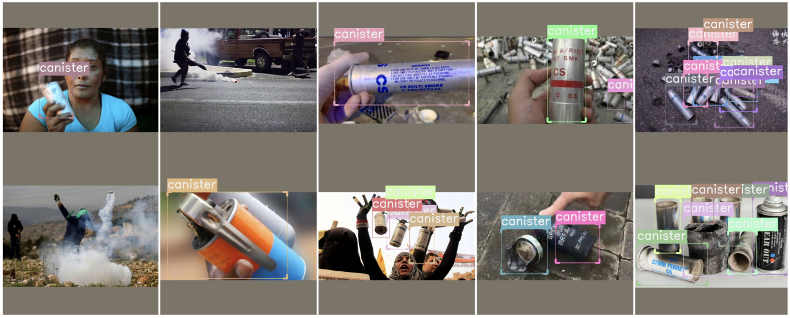

Detecting Tear Gas Canisters with Limited Training Data
Human rights investigations often require triaging large volumes of open source data in order to find moments within image, or video that are relevant to a given investigation and warrant further inspection. 37-40mm tear gas canisters are some of the most common munitions used against protesters worldwide, however searching for images containing tear gas usage online manually is laborious and time-consuming.

Working with a team of open-source researchers guided by Forensic Architecture, we focussed on applying object detection models to facilitate discovery and identification of tear gas canisters for human rights monitors. For convolutional neural network (CNN) based object detection to work, a large amount of training data is required. To achieve our objective, we benchmarked methods for training object detectors using limited labelled data: we fine-tuned different object detection models on the limited labelled data and compared performance to a few shot detector and augmentation strategies using synthetic data. We provided a dataset for evaluating and training tear gas canister detectors and showed how such detectors can be deployed for a real world application such as investigating human rights violations.

Our experiments demonstrated that fine-tuned state of the art detectors perform as well as the few shot detector, and including synthetic data can improve results. This research is summarised within a paper accepted to the Winter Conference for Applications of Computer Vision 2022. My contributions involved training several state of the art detectors (Faster R-CNN and RetinaNet) for benchmarking, data labelling and pre-processing as well as report writing.
Collaboration with Lachlan Kermode, Chris Tegho and Ashwin D’Cruz